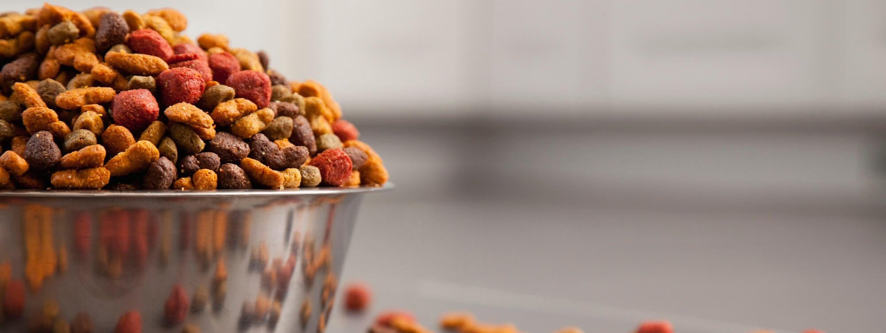
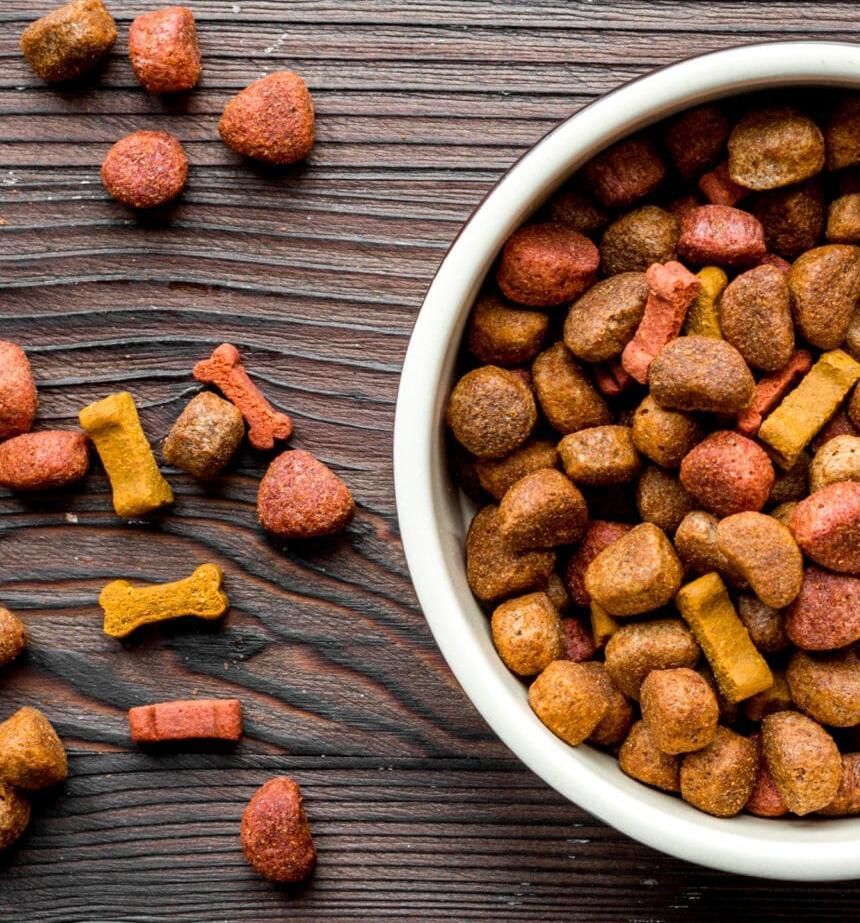

Alimentalo bien
con el menjor
sistema de
nutrición.
Ofrecemos alimentos de 1ra calidad

Conocemos la influencia que tiene una buena nutrición en el ánimo y la salud de las mascotas. También sabemos el valor que cada una de ellas tiene para su dueño, es por eso que en Dr. Cossia trabajamos día a día para lograr un mejor desarrollo, producción y comercialización de líneas de alimentos balanceados que les aseguren una mejor calidad de vida. Para brindar productos de excelencia nutricional para su mascota se utilizan materias primas argentinas, perfectamente seleccionadas de alto valor biológico que favorecen una mayor palatabilidad y digestibilidad que satisfacen los requerimientos nutricionales en cada etapa del desarrollo de cada animal, brindando así la más alta calidad en alimentación.
Conocemos la influencia que tiene una buena nutrición en el ánimo y la salud de las mascotas. También sabemos el valor que cada una de ellas tiene para su dueño, es por eso que en Dr. Cossia trabajamos día a día para lograr un mejor desarrollo, producción y comercialización de líneas de alimentos balanceados que les aseguren una mejor calidad de vida. Para brindar productos de excelencia nutricional para su mascota se utilizan materias primas argentinas, perfectamente seleccionadas de alto valor biológico que favorecen una mayor palatabilidad y digestibilidad que satisfacen los requerimientos nutricionales en cada etapa del desarrollo de cada animal, brindando así la más alta calidad en alimentación.